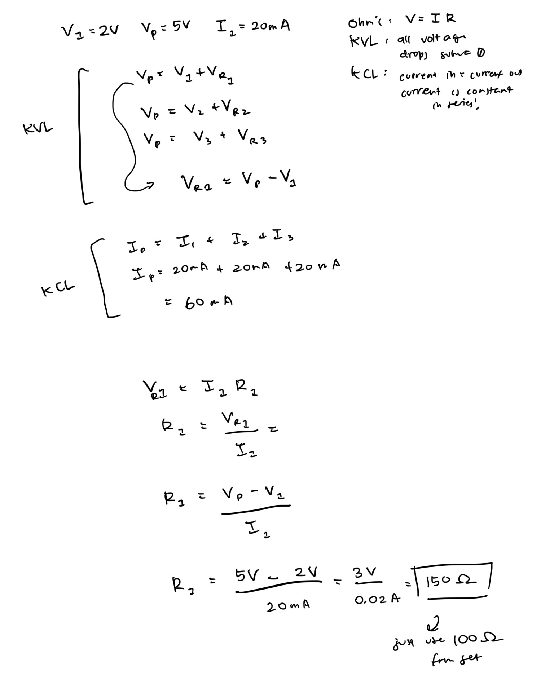

Resistor Calculation

Here is all the documentation for assignment 1!



// pin number for LED1
int LED1 = 12;
// pin number for LED2
int LED2 = 10;
// pin number for LED3
int LED3 = 8;
// the setup function runs once when you press reset or power the board
void setup() {
// initialize digital pin LED1 as an output.
pinMode(LED1, OUTPUT);
// initialize digital pin LED2 as an output.
pinMode(LED2, OUTPUT);
// initialize digital pin LED3 as an output.
pinMode(LED3, OUTPUT);
}
// the loop function runs over and over again forever
void loop() {
// change state of LED1 by setting the pin to the HIGH (5V) voltage level
digitalWrite(LED1, HIGH);
// change state of LED2 by setting the pin to the LOW (0V) voltage level
digitalWrite(LED2, LOW);
// change state of LED3 by setting the pin to the LOW (0V) voltage level
digitalWrite(LED3, LOW);
// wait for a second (LED1 is bright for 1s)
delay(1000);
// change state of LED1 by setting the pin to the LOW (0V) voltage level
digitalWrite(LED1, LOW);
// change state of LED2 by setting the pin to the HIGH (5V) voltage level
digitalWrite(LED2, HIGH);
// change state of LED3 by setting the pin to the LOW (0V) voltage level
digitalWrite(LED3, LOW);
// wait for a second (LED2 is bright for 1s)
delay(1000); digitalWrite(LED1, LOW) ;
// change state of LED1 by setting the pin to the LOW (0V) voltage level
digitalWrite(LED1, LOW);
// change state of LED2 by setting the pin to the LOW (0V) voltage level
digitalWrite(LED2, LOW);
// change state of LED1 by setting the pin to the HIGH (5V) voltage level
digitalWrite(LED3, HIGH);
// wait for a second (LED3 is bright for 1s)
delay(1000);
}

I could technically try to blink 13 LEDs, one for each pin in the Arduino. But that would probably draw ~260 mA of current, which exceeds the maximum total current, which would burn out the Arduino. So I can actually only blink 9 LEDs safely, which would draw ~180 mA.
I need to blink my LEDs about 15-20ms before I can no longer tell. Around 20ms is when it stops looking like blinking, and more like a slight flicker. Around 10ms is when it really completely looks constant.
I did use AI tools. I used Claude to refresh my memory on how to write HTML. It gave me more information than I needed, so I just used it for formatting. Everything else is my own thinking. Chat: https://claude.ai/share/7d2aa6ca-e254-4104-92de-5ebaa89c192e It was helpful for verifying that my calculations were correct. I was confused on whether I needed to use 20mA or 10mA in my calculations for resistance, and I was able to realize that was only if all LEDs were on at once.